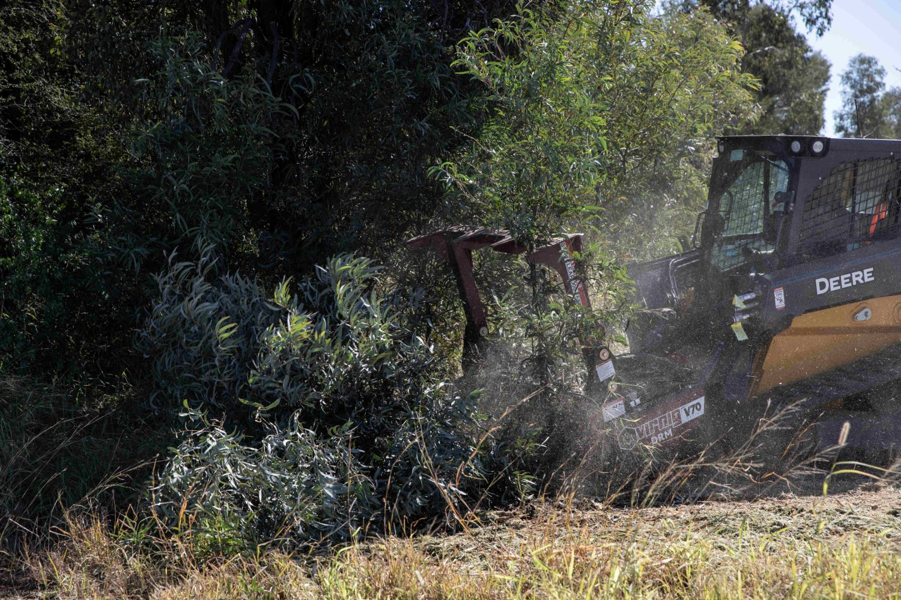
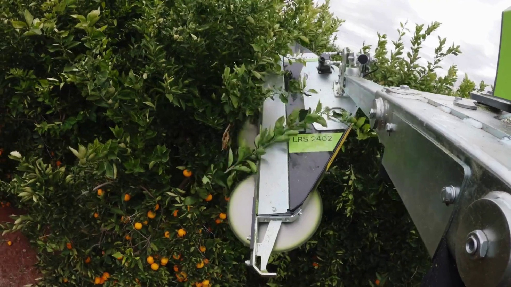
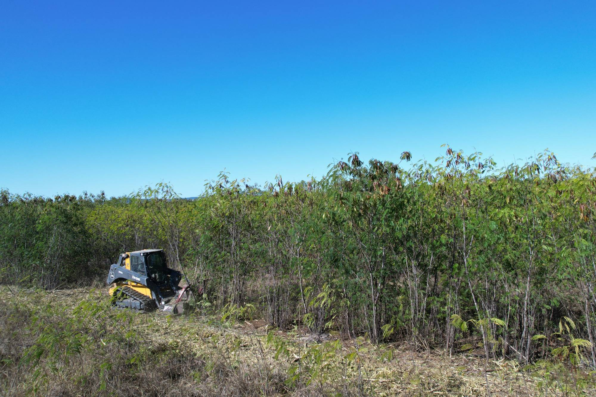

Leucaena Management
Drum Mulchers, Disc Mulchers and Quadsaws for mechanical management of established leucaena.
Compare leucaena management equipment
 DISC MULCHER
90+ HP high-flow skid steers only
DISC MULCHER
90+ HP high-flow skid steers only
Virnig V70 Tree Disc Mulcher
High-productivity cutting and mulching.

Virnig V70 Drum Mulcher
Maximum material processing and the finest residual material.

QUADSAWGreenTec Quadsaw
High-productivity cutting without mulching the material.
Which system suits your operation?
| V70 Disc | V70 Drum | Quadsaw | |
|---|---|---|---|
| {{ r.label }} | {{ r.disc }} | {{ r.drum }} | {{ r.saw }} |
Actual work rate depends on crop condition, carrier configuration, stem diametre, biomass and other operating conditions.
Have a high-flow skid steer?
Primarily have a tractor or telehandler?
See them working in leucaena
Proven in leucaena
{{ storyPhotoBrief }}
Virnig V70 Tree Disc Mulcher
High-productivity cutting and processing for suitable high-flow skid steers.
The V70 Disc Mulcher provides a productive method of mechanically resetting established leucaena while processing the material as it cuts.
Compared with the drum mulcher it generally performs less material processing, allowing higher forward productivity in suitable conditions while leaving a coarser residual material.
Because the carrier travels through the treated row, operating height is influenced by the clearance the skid steer needs to pass over the cut material.
Virnig V70 Drum Mulcher
Maximum material processing for a finer finished result.
The drum progressively cuts and processes the leucaena, producing considerably finer residual material than the disc mulcher or QuadSaw.
That additional processing requires more work from the attachment, so the drum generally trades some forward productivity for a finer finished result.
As with the disc mulcher the skid steer must travel over the treated row, which generally requires the leucaena to be reduced to a relatively low operating height.
Disc result vs drum result
Photograph both from the same height and distance, same stand, same day. This comparison sells the difference better than any paragraph.
GreenTec Quadsaw
Cut the leucaena without processing the material.
The Quadsaw takes a fundamentally different approach to the mulchers. Rather than using available power to process the entyre canopy into smaller material, the saw concentrates on making the cut.
The cut material is left substantially intact. The system can also be configured around a broader range of carriers through the GreenTec Multi Carrier system.
Working widths and branch capacities are published GreenTec figures - confirm against the model page before ordering.
Which vehicle are you running?
Tell us the machine you already have on the property and we will recommend the attachment and configuration that suits it.
Running something else? Tell us what you have.
Prototype form - submissions are held in the browser and are not yet sent anywhere.
We will come back with an attachment recommendation for that machine. If it is urgent, call 07 5315 8020.
In the field
What Are You Running?
Send us your carrier details and a photo of the leucaena. We'll help identify the right attachment and configuration.
Or call 07 5315 8020Prototype form - submissions are held in the browser and are not yet sent anywhere. Call 07 5315 8020 for a real reply today.
A product specialist will come back to you with a recommendation. If it's urgent, call 07 5315 8020.
More than the attachment
{{ w.d }}

We size attachments against carriers every week. If the machine you run won't do the job properly, we'd rather tell you before you buy.
Mechanical leucaena management
{{ b.p1 }}
{{ b.p2 }}
Agronomic guidance on leucaena establishment, grazing management and pasture productivity is published by Meat & Livestock Australia, FutureBeef, The Leucaena Network and the Queensland Government. DTE Equipment supplies the mechanical equipment - we don't claim a direct causal link between mechanical cutting and cattle weight gain.
Leucaena management equipment FAQs
{{ f.a }}
Assets to collect before this page goes live
Hide this block with the Show asset checklist tweak before publishing.
Match the attachment to your machine and leucaena
Send us your carrier details and photos of the stand. We'll help identify the appropriate setup.